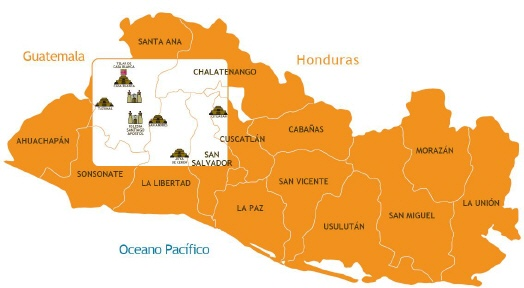

En El Salvador existen numerosos sitios arqueológicos que forman parte de la Ruta Maya.
Las civilizaciones Maya, Pipil y Lenca, formaron sus asentamientos en esta tierra, donde todavía se conservan algunos de sus centros ceremoniales tales como:
- Joya de Cerén
- San Andrés
- Cihuatan
- Casa Blanca
Esta se trata de un yacimiento arqueológico abierto al público que es reconocido a nivel internacional. Para saber más de este parque y lo que ofrece, solo debes seguir leyendo.

Se estima que este espacio debió estar habitado como mínimo desde el año 400 d.C. Asimismo, dos siglos más tarde en los 600 d.C. se sitúa la fecha aproximada de su abandono.
En este espacio salvadoreño los turistas pueden llegar y aprender más sobre la cultura de este antiguo pueblo. Si están interesado en saber más sobre este lugar, solo sigue leyendo

En esta zona arqueológica, quienes la visiten podrán ver de primera mano los modos de vida de los antiguos Mayas. Asimismo, tendrán la posibilidad de encontrar no solo estructuras, sino también artefactos manufacturados por estas antiguas culturas.
Básicamente, este parque se trata de un sitio de investigación arqueológica que ha sido abierto para el público. En él, los visitantes tendrán la oportunidad de conocer en detalle datos sobre las culturas antiguas.

Un detalle que hace popular a este sitio arqueológico es su cercanía con la capital. Gracias a ella, muchos salvadoreños cuentan con un punto de acceso fácil a las instalaciones del parque.
Este famoso parque de El Salvador se encuentra ubicado en una parte de la zona arqueológica de Chalchuapa. El municipio que la contiene lleva el mismo nombre que esta y está contenido por el departamento de Santa Ana. Por ende, se trata de un lugar turístico ubicado en la zona occidental del país.

Un detalle muy llamativo de este parque ecológico es que no cuenta ni con una ni con dos sino con seis estructuras antiguas. Gracias a ello, los usuarios que la visiten tendrán la oportunidad de conocer una gran variedad de espacios arqueológicos dentro de sus 6 kilómetros cuadrados. Sin embargo, como cada una de estas estructuras tiene su particularidad, vale la pena mencionarlas por separado: